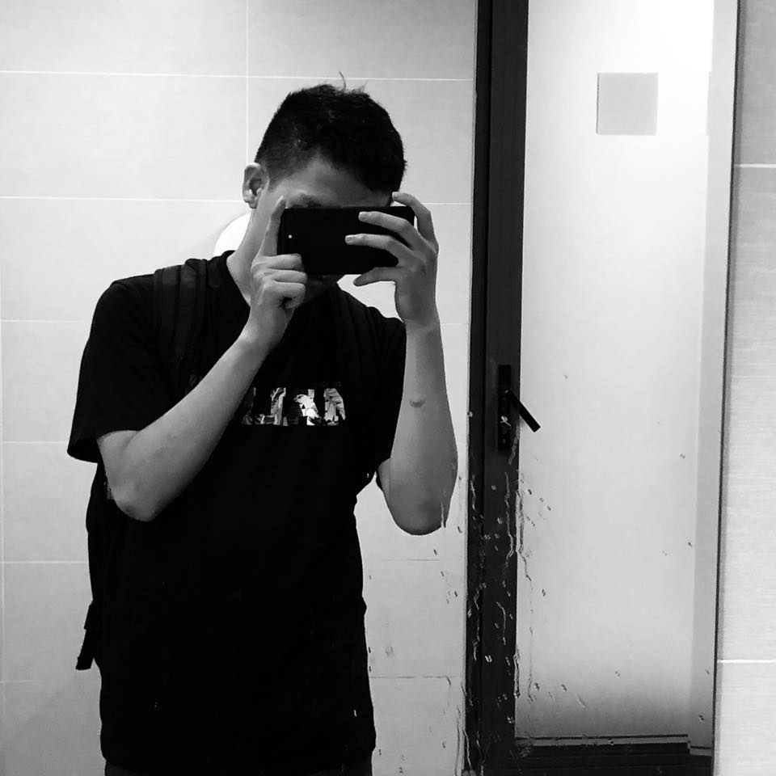

<mat-toolbar style="background-color: #7B7F78;" >
  <button style="background-color: rgb(0, 0, 0);transform: rotate(180deg);" mat-mini-fab color="primary"
    aria-label="Example icon button with a menu icon"><span class="material-icons">
      forward
      </span></button>
  <span style="margin-left: 10%;"><strong style="font-size: 2.5vw; color: white; ">Chọn Bàn</strong></span>
  <span class="example-spacer"></span>
  <button style="margin-right: 2%;background-color: rgb(0, 0, 0); color: rgb(255, 255, 255);width: 200px;height: 50px; font-size: 22pt;"
    mat-raised-button color="primary" (click)="openDialogJoin()">Tìm Phòng</button>
  <button style="margin-right: 2%;background-color: rgb(0, 0, 0); color: rgb(255, 255, 255);width: 200px;height: 50px;  font-size: 22pt;"
    mat-raised-button color="primary" (click)="openDialog()">Tạo Phòng</button>
  
</mat-toolbar>

<!-- trong -->
